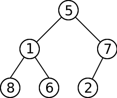
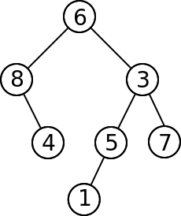
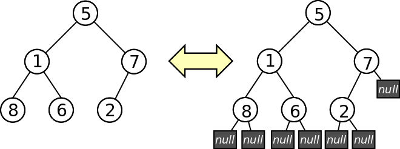

Para efeitos da nota atribuída à resolução de exercícios ao longo do semestre, os exercícios que pode submeter desta aula são:
Prazo de submissão: 8 de dezembro (submeter no Mooshak de EDados)
É encorajado que vão falando com os docentes e outros colegas se tiverem dificuldades. No entanto, qualquer ajuda mais direta que tenham recebido de outros colegas deve ser reconhecida nos comentários do programa que submetem.
Depois do prazo os problemas continuarão disponíveis no Mooshak, mas as submissões não contarão para a sua nota.
Cada aula vale 11% da nota desta componente. Como existem 11 aulas com submissões, pode ter pontuação máxima mesmo sem ter feito tudo.
Para um problema contar tem de acertar todos os testes (ou seja, ter accepted). Mesmo que resolva todos os problemas, o máximo numa aula é de 100%.
Para ter 100% bastará sempre resolver os exercícios do guião principal.
Uma maneira de descrever uma árvore é usar uma das seguintes representações:
Considere a árvore binária da figura seguinte:

Nas 4 representações anteriores, a árvore da figura seria descrita do seguinte modo:
5 1 8 6 7 28 1 6 5 2 78 6 1 2 7 55 1 7 8 6 2Para garantir que percebeu, procure agora escrever no seu caderno as 4 representações como descritas para a seguinte árvore (preorder, inorder, postorder, em largura):

6 8 4 3 5 1 78 4 6 1 5 3 74 8 1 5 7 3 66 8 3 4 5 7 1Escolhe um percurso e carrega em Reproduzir, ou avança um passo de cada vez. O nó cheio a azul é o que está a ser visitado agora; os nós com ✓ já foram impressos. Com as previsões ligadas, o widget pergunta qual é o próximo valor impresso.
Árvore de exemplo: raiz 5; filhos de 5: 3 e 8; filhos de 3: 1 e 4; filhos de 8: 7 e 9.
5 3 1 4 8 7 91 3 4 5 7 8 91 4 3 7 9 8 55 3 8 1 4 7 9Qual é a altura da árvore acima? (uma árvore só com a raiz tem altura 0)
1234O caminho mais longo da raiz a uma folha, por exemplo 5 → 3 → 1, tem 2 ligações. Conta ligações, não nós.
Crie um ficheiro input.txt contendo a seguinte linha: 5 1 8 N N 6 N N 7 2 N N N. Esta é a representação preorder da árvore binária da figura seguinte (onde N representa explicitamente um nó nulo).

(as duas representações da imagem referem-se à mesma árvore)
Agora execute a classe de teste das árvores dando como input o ficheiro que criou:
Procure acompanhar cada uma das linhas de código de TestBTree.java e perceber qual é o seu objetivo. Espreite também para os métodos numberNodes, depth e contains.
Crie um ficheiro input2.txt contendo a descrição preorder da árvore binária de 7 nós descrita na figura da pergunta 1.2 (Percebendo as várias ordens de visita aos nós). Execute novamente TestBTree, agora com este novo input, e verifique se os resultados são os esperados.
O método numberNodes conta o número de nós. Resolva o problema [ED204] Contando folhas (também disponível no Mooshak).
Pode experimentar aqui: complete o método numberLeafs e carregue em Executar testes.
N)5 N N)5 1 8 N N 6 N N 7 2 N N N)6 8 N 4 N N 3 5 1 N N N 7 N N)1 N 2 N 3 N 4 N N)Como este é o primeiro exercício de árvores aqui fica uma possível solução já em código Java:
Resolva o problema [ED205] Árvores estritamente binárias (também disponível no Mooshak).
Resolva o problema [ED206] Percorrendo caminhos (também disponível no Mooshak).
Resolva o problema [ED207] Nós profundos (também disponível no Mooshak).
Aqui ficam mais alguns problemas envolvendo árvores:
Resolva o problema [ED211] Contando os números pares (também disponível no Mooshak).
%, que devolve o resto da divisão inteira)Resolva o problema [ED212] Soma de todos os níveis (também disponível no Mooshak).
Resolva o problema [ED213] Caminho de maior soma (também disponível no Mooshak).